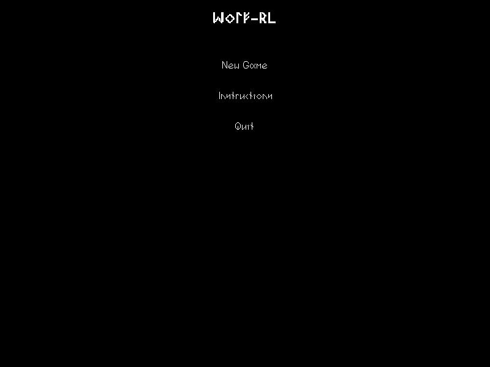
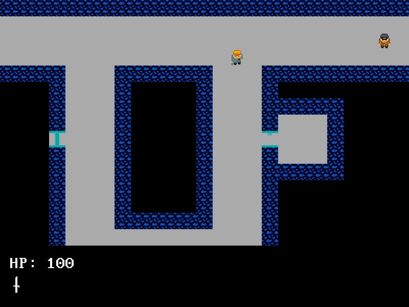
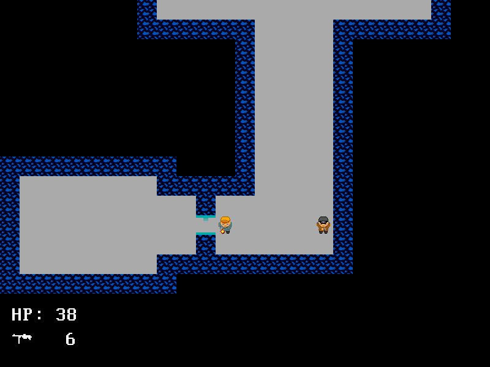

WOLF-RL
Imagine a time when Roguelikes were games for NERDS! and not kewl games liek Spelunky!!
You ever play DOOMRL? No? Of course not. Here's something vaguely related that's also totally a Roguelike!
(The "RL" stands for "Not a Roguelike")
!!Here's an Extreem Kewl Video!!
HERES WERE YOU CAN ALSO DOWNLOAD THE MAGIC:
Awesome Pics!!:
  Lawyer Stuff
<: License: ZOMFG NONE! (Free use, public domain blah blah blah) (i.e. please don't sue us)
All assets and fonts (except the vga dos one) are public domain!! USE THEM TO YOUR HEART's CONTENT!!!
MorePerfectDOSVGA Font by: Adam Moore http://laemeur.sdf.org/fonts/(On a serious note: The game and all assets made by us are released to the public domain. Attribution is nice but not necessary)
Built on notepad like it's 1997 baby yeah